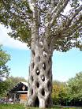

ИЗДАНИЕ 01
Сосредоточением на своих мышцах йог мог их развивать настолько, что если их напрячь, они не травмировались железными клещами! Патрик Эдпингер является в Европе родоначальником скалолазания без альпинистского снаряжения. Все, что он имеет - мешочек с магнезией. Сила его рук такова, что он может подтягиваться на любом пальце обеих рук! Когда актом воли мы посылаем сознание наше в другие нервные клетки, последние начинают развиваться и превращаться в такие же носители сознания, как и высокоразвитые клетки мозга. Для тех, кто не верит в фактичность эффекта сознания на тело, предлагаем простой эксперимент: протяните правую руку со сжатым кулаком и вытянутым указательным пальцем. Теперь направьте внимание на вытянутый указательный палец, т. е. думайте с концентрированным вниманием об указательном пальце с чувством, что вы сами входите в точку пальца. Через некоторое время почувствуете тепло в пальце, в нем начинается пульсация, он краснеет.
Эта методика связана с медленными движениями, она базируется на простых, естественных для нецивилизованного человека навыках, помогавших ему выжить: элемента борьбы, охоты, бега и т. д. Важно отметить, что первобытный человек проделывал свою работу не просто с огромной затратой физических сил, но и с максимальной концентрацией внимания. Ведь, невозможно вытаскивать огромную рыбу или метать копье, думая о чем-то постороннем, эффект сведется к нулю. Этот человек имел универсальные способности, т. к. вынужден был обходиться только своими возможностями и с утра до ночи его жизнь состояла из непрерывных упражнений, от этого люди были здоровы и обладали мощью и силой. Цивилизованный человек ограничил свою подвижность и появилось множество болезней, немощь, хворь. Многие виды спорта, развивая тело, дают большую нагрузку на сердце. Скажем, атлеты имеют расширенные сердца. За редким исключением, виды спорта дают одностороннее развитие: фехтовальщик сильно развивает правую руку и ногу, футболист - ноги, и т. д. Если вы хотите развить все мускулы одновременно нужно заниматься всеми видами спорта. Но где на это время? С помощью этого метода вы гармонично и быстро разовьете свое тело без спортивного инвентаря. Вам будет нужно зеркало и 20-30 минут каждый день! Система медленных упражнений состоит из игровых движений в сочетании с сильной умственной концентрацией. Каждый может заняться таким спортом у себя дома. Во время упражнения, напрягая волю и воображение, мы сосредоточиваемся на движущейся мышце и посылаем в нее поток праны. Если мы сгибаем правую руку (медленно), непрерывно наблюдая это движение и представляя, что большое количество праны стекает сейчас в руку вместе с кровью, мы уже достигли результата! Мы используем созидательную мощь сознания.
После нескольких недель тренировок, соединенных с умственной концентрацией, мы вдруг замечаем, что мышцы руки выросли так, как если бы мы выполняли тяжелую работу на протяжении нескольких месяцев! Мощь сознания придает мышцам такую форму и размеры, какие мы держим в воображении, как идеал. Секрет большого эффекта медленных упражнений на мышцы состоит в созидательной мощи сознания. При этом крошечные окончания нервов, которые пронизывают все тело, заряжаются сознательно, по вашей воле. Во время упражнений эти мельчайшие резервуары заполняются определенным количеством праны, построение мускулов продолжается не только во время упражнений, но даже во время сна, прогулки! Например, один прыгун в высоту мечтал вырасти, страстно желал ставить рекорды, но с маленьким ростом это было невозможно. И он поставил перед собой задачу: "Каждый год расти НА 8 СМ!" И вырастал, причем действительно на 8 см.
СТРЕЛЬБА ИЗ ЛУКА
Стоя, расставив ноги, поворачиваемся слегка медленно в сторону, как если бы мы держали лук в левой руке. Стоя
твердо, натягиваем мышцы бедер, рук, вытягиваем левую руку, натягиваем лук правой рукой и затем освобождаем тетиву. Все упражнение занимает минуту. Заканчивается оно встряхиванием мышц и глубоким медленным дыханием.
РУБКА ДРОВ
Одно из важнейших упражнений. Стоя, расставив ноги поднимаем руки перед зеркалом, воображая, что между сжатыми руками топор. Колем воображаемые дрова так. чтобы каждый удар занимал от одной до двух минут. В конце расслабляем мышцы, делаем глубокое дыхание.
МЕТАНИЕ КОПЬЯ
Стоя, расставив ноги, вытянуть левую руку в сторону, сжимая кулак правой руки, как бы собираясь бросить копье. Отводим назад правую руку и слегка сгибаем туловище назад. Это основное положение. Теперь выполняем все движения метания копья, вплоть до последней фазы, когда правая рука, держащая копье, вытянута вперед, а левая находится позади. Во время упражнения сгибаем колени, сначала правое, потом левое. Мы должны двигаться непрерывно, плавно, пластично, грациозно. Очень важно выполнять эти движения БЕЗ ВЕРХНЕЙ ОДЕЖДЫ, ПЕРЕД ЗЕРКАЛОМ! Будет неплохо, если освещение падает на тело таким образом, чтобы выгодно подчеркивать рельеф мускулатуры. Занимаем основную позицию перед зеркалом для метания копья, напрягая до предела каждый мускул, проходим через каждую фазу упражнения так медленно, как если бы мы наблюдали себя в фильме с замедленной съемкой. Упражнение должно занимать не 1-3 секунды, а 30-60 сек. Поворачивая слегка голову можно наблюдать движение мышц и всего тела в зеркале. Мы видим, как наши мускулы напрягаются и увеличиваются в размерах и своим воображением посылаем в них прану, которую можно представить в виде золотистого потока, идущего в мускулы. После выполнения упражнения остаемся в последней фазе на минуту, а затем медленно возвращаемся в исходную позицию, потом повтор 2-3 раза. В конце быстрым встряхиванием мышц расслабляем те из них, которые участвовали в выполнении упражнения.
Заканчивается оно глубоким дыханием.
Примечание: представители некоторых видов спорта могут посмеяться над подобными упражнениями. Однако прежде чем выражать свое мнение, им следовало бы для выявления эффекта медленных упражнений проделать их самим хотя бы неделю-две. Они бы увидели удивительные вещи! Сознание "рисует" формы новых мощных мускулов в соответствии с вашим желанием, когда мы сознательно посылаем энергию в тело, сосредотачивая на этом все наше внимание. Нет такого органа, который бы не отозвался на эти посылы! Все зависит от вашего воображения и желания и, наконец, оттого, верители вы в то, что делаете, в то, чего нет, для того, чтобы оно могло быть!
ПОДНЯТИЕ ТЯЖЕСТИ
Сгибаемся вперед, охватываем обеими руками воображаемый тяжелый предмет и вырываем его до уровня плеч, сгибая колени под его весом. Расставив ноги, поднимаем этот вес высоко над головой, на вытянутых руках. Стоя перед зеркалом, наблюдаем свое тело, выполняем упражнение медленно, чтобы оно занимало минуту времени. Потом встряхивание мышц, глубокое дыхание.
ТОЛКАНИЕ ЯДРА
Стоя в напряжении с воображаемым ядром в правой руке, левая рука вынесена вперед. Делаем бросок перед зеркалом медленно, в течение минуты. В конце упражнения встряхиваем руками, глубокое дыхание.
БЕГ
Бег - естественное движение древнего человека. Перед зеркалом мы проходим через все движения бегуна, не покидая первоначального места. Направляем прану во все мышцы, которые участвуют в упражнении. Заканчиваем упражнение встряхиванием мышц для их расслабления и делаем несколько глубоких медленных дыханий.
БОКС
Стоя перед зеркалом, занимаем позицию боксера и наносим серию ударов правой и левой руками. Все это выполняется возможно медленнее с полной концентрацией внимания и полным напряжением мышц. Заканчиваем расслаблением мышц и полным дыханием.
Эта методика поможет в проработке отдельных ударов в любом виде боевого искусства. В каратэ есть особый психологический прием, усиливающий удар - нужно не просто бить в голову, а представлять, что центр удара внутри головы или за головой. Важно сформировать представление о том, что бить надо не на поверхности, а внутрь поверхности. Не надо торопиться выполнить много ударов. Здесь важно проработать один-единственный (сначала) удар, блок, уход, нырок и т. д. Если вы занимаетесь каратэ или боксом, эта метода поможет в постановке невиданного по мощи удара! Не нужно только увлекаться и повторять раз за разом упражнения, приведенные здесь, чередуйте медленные движения с быстрыми, короткие с серией ударов, и все получится.
ПЛАВАНИЕ
Лежа на животе, на скамейке, выполняем движения пловца, постоянно думая о регулировке дыхания. Затем ложимся на спину и выполняем движения пловца на спине, все делаем медленно. Это очень важное упражнение и его следует выполнять дольше других. Заканчиваем, как всегда, встряхиванием мышц и полным дыханием. Это упражнение можно делать и в воде, если вы умете хорошо плавать. Это даст точное соответствие дыхания, движения и внешней среды. К тому же в воде расслабление, что называется, всегда под "боком".
Вообще тому, кто занимается этой методикой, плавание очень полезно! Оно дает эластичность, постановку правильного дыхания. На суши мы то и дело "ломаем" дыхание - то форсируем излишне, то наоборот, забываем и часто задерживаем. Это ведет к запрещенное™ в разговоре, поведении, в жизни. После этого упражнения (плавания) нужно делать очень медленное дыхание. Напоминаем об этом, поскольку у начинающих тренироваться всегда есть соблазн отмахнуться от освежающего дыхания после исполнения упражнений. Нужно прочувствовать вкус дыхания. Есть несложное упражнение: лягте удобно на жесткую поверхность, глубоко вдохните и, слегка сжав зубы, через рот выдохните. После этого несколько секунд дышать не хочется, чувствуете себя вы довольно приятно. Потом дышите как получится, т. е. отпустите дыхание и ощущайте наслаждение от каждой дыхательной фазы. Несколько минут в день, - и вы вырабатываете в себе особое настроение - смесь спокойствия, уверенности и радости.
ПЕРЕТЯГИВАНИЕ КАНАТА
Стоя, расставив ноги перед зеркалом, вытягиваем правую руку, схватываем крепко воображаемую веревку и тянем ее изо всех сил, поворачивая туловище чуть вправо. Затем повторяем все левой стороной. Это попеременное упражнение лучшее для мышц спины, особенно широчайших. Не забывайте выполнять упражнения как можно медленнее, чтобы сопровождать каждую фазу концентрацией внимания. Движения полностью гармоничны. Заканчивая, расслабьте мышцы, полное глубокое дыхание.
Похожее упражнение - "вытягивание воды из колодца". Слегка наклонившись вперед, медленно проходим все фазы, соответствующие вытаскиванию воды из колодца. Схватываем воображаемую веревку попеременно обеи.ми руками, вытаскиваем ее так, что когда левая рука согнута и находится у груди, правая достигает пола. Лучше представить, что вес ведра не 10, а 100 кг! Как всегда в конце - расслабление и глубокое дыхание.
При помощи "Супертела" можно проработать любые движения - скажем, вас не устраивает сила кистей рук: растопырьте пальцы'обеих рук, начните медленно сжимать, представляя, что внутри ладони - яблоко или свинцовый шар. Постепенно пальцы сжимаются в кулак, а шар "вытекает" сквозь пальцы. После этого желательно проработать мышцы в обратном порядке - ваш кулак в свинцовой оболочке. С усилием разжимайте пальцы, преодолевая сопротивление окружающей среды.
Помашите расслабленными кистями, встряхните их. Можно опустить в теплую воду, представить, что кисть медленно и без остатка растворяется.
Ни в коем случае не отвлекайтесь во время упражнений! Иначе все усилия пойдут насмарку! Во время отдыха хорошо представить себя в фантазиях мощным Атлетом с супертелом. Этот образ будет питаться вашим сосредоточением внимания через обратную связь от вас.
БОРЬБА
Перед зеркалом боремся с воображаемым противником. В этом упражнении медленные движения имеют особое значение. Во время между различными захватами, при напряжении нужно задерживать дыхание, ноне более чем на 7 сек.

ЛАЗАНИЕ ПО ДЕРЕВЬЯМ
Очень важное упражнение для построения тела. Оно имеет несколько вариантов. Цель - имитирование естественного лазания по стволу дерева. Повисаем на толстой ветке дерева, перекладине, косяке двери... Сначала висим без движения несколько секунд, затем, отдохнув немного, снова хватаемся за ветку и висим так долго, как можем. Мысленно имитируем движения, как будто перемещаемся выше и выше, затем мысленно спускаемся вниз. В конце встряхиваем мускулы, полное дыхание. Можно обойтись без висов, хотя именно они столь полезны не только для активного лазания, но и в качестве расслабляющего мускулы и позвоночник средства (В последнем случае надо вися делать встряхивающие движения ногами и корпусом, как бы приподнимая его вверх, встать на цыпочки как можно выше и представить трудный подъем на дерево, скалу. Руки можно держать прямыми или сгибать, приближая вершину.
КОСЬБА
Отличное упражнение для развития мышц спины и бедер, для сохранения гибкости позвоночника. Движение направо и налево стимулирует нервы, находящиеся вокруг него. Мы проходим все движения косаря направо и налево, затем наклоняемся вперед и "срезаем" серпом траву. Все делаем медленно. Заканчиваем полным расслаблением и глубоким дыханием.
Другой вариант: "гребля одним веслом или отталкивание шестом влево, вправо". Не обращайте внимания на простоту упражнений, их эффект вы почувствуете быстрее, чем от занятий "железом" по много часов в день!
ПОЛЗАНИЕ НА ЧЕТВЕРЕНЬКАХ
Взрослые люди могут посчитать выполнение этого упражнения унизительным, недостойным и пр., тем не менее оно очень полезно! Ползание на четвереньках хотя бы пять минут даст такой эффект на циркуляцию крови, головной мозг и систему эндокринных желез, как йоговские позы с перевернутым положением тела. Противопоказано выполнять людям с большой степенью близорукости (- 5, -7), с гипертонией, болезнями сердца.
При ползании на четвереньках не следует опускаться на колени, а передвигаться на вытянутых руках и ногах, чтобы голова находилась ниже корпуса. В течение двух минут передвигаться на вытянутых руках и ногах, затем также медленно передвигаться на прямых ногах, на немного согнутых руках, а заканчивать упражнение надо ползанием на прямых руках и ногах.
Последняя стадия называется "индийское ползание". При длительном практиковании это упражнение дает отличное развитие всей мускулатуры. Заканчиваем встряхиванием и глубоким дыханием.
Примечание: самое идеальное выполнение упражнений - под руководством учителя одновременно с ним. Например, в романе Ефремова "Лезвие бритвы" описан такой гуру, имеющий чудовищные мышцы, с помощью которых он изуродовал автомобиль гангстеров.
Концентрируя внимание, ученик наблюдает игру мышц, симметрично развитое тело учителя. С учителем эффективность выполнения упражнений выше, но можно обойтись и зеркалом. Желательно, чтобы сверху или сбоку на ваши мускулы падал свет, выделяющий контрастно игру теней и увеличивающий впечатление от собственного тела. Всегда видьте в зеркале прекрасный идеал!
Иногда стоит отключиться от непосредственного выполнения упражнений данного пособия, поговорить со своим телом (не удивляйтесь этому), успокоить его, внушить веру в успех дела. Не обязательно говорить конкретными словами, есть множество вариантов, скажем, вы хотите прочувствовать и успокоить руки:
а) ладонью правой руки нежно проведите по тыльной сто
роне левой, едва касаясь ее, то же самое левой;
б) кончиками первых трех пальцев правой руки нежно
гладьте каждый палец левой руки, начиная с большого;
в) вытяните правую руку, фиксируя все внимание на ее
центре, а затем нежно, медленно, сознательно сгибайте по
очереди все пальцы, пока не сожмете в кулак. Остановитесь
на некоторое время, концентрируясь на кулаке. Затем мед
ленно по очереди раскройте все пальцы. Это упражнение
нужно выполнять с максимальной концентрацией один раз
в день.
Руки симвопизируют волю и их можно тренировать, как если бы они были антенны, где каждый палец может передавать различные течения и волны. Моя руки под краном, представляйте, что вы включаете струю духовной воды -поток из светлых и чистых красок, в который вы опускаете руки на долгое время.
Не забывайте о развитии гибкости суставов и эластичности мышц, поэтому занимайтесь плаванием, бегом, гимнастикой или хотя бы разминкой. Особое внимание уделите расслаблению, "гаммам расслабления", как писал В. Леви в "Искусстве быть собой". Например, поднимите руку, ощущая легкое напряжение мышц, ее поднимающих. Замрите на секунду, запоминая это напряжение. А затем легко уроните руку, ощущая, как те же мышцы расслабляются, отпускают что-то в вас. Запомните это расслабление. Проработайте все мускулы таким образом.